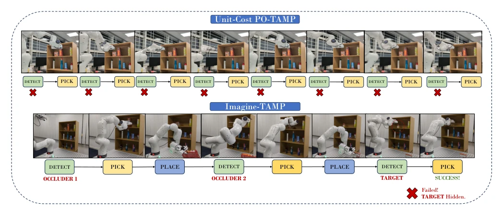
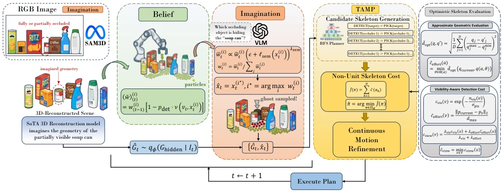
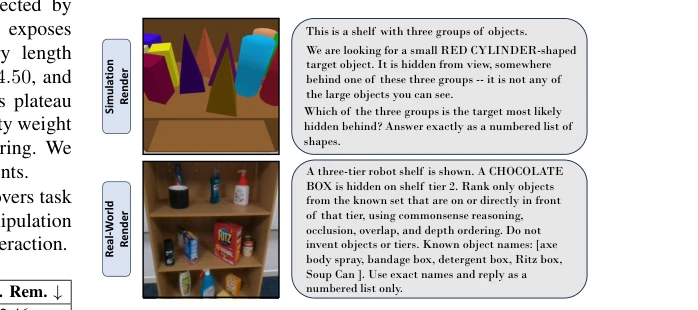
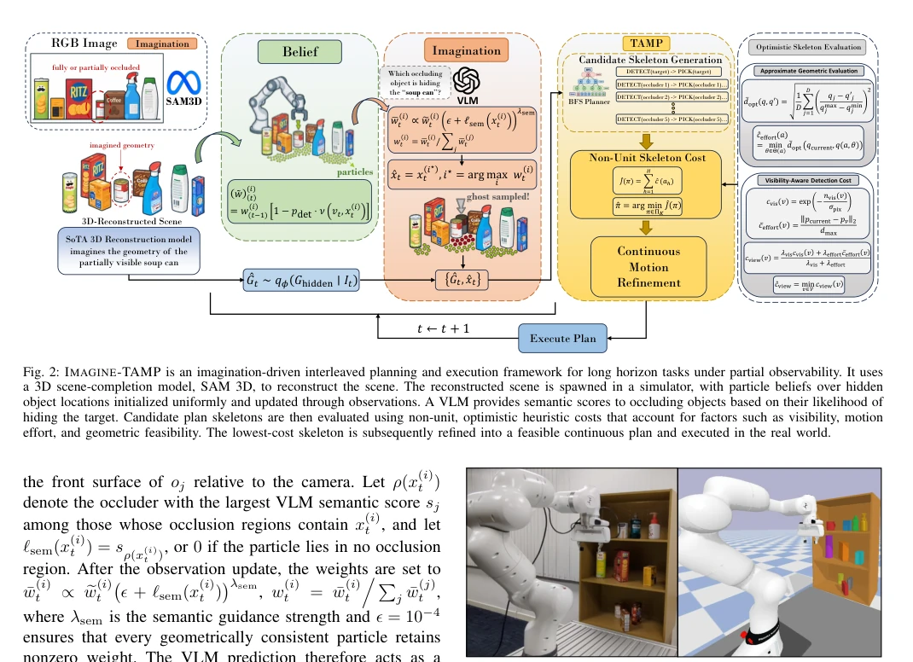

Imagine-TAMP: Imagination-Guided Task and Motion Planning in Partial Observability
Antareep Singha, Shivaram Kumar, Yoonwoo Kim, Yoonchang Sung abspdf
论文点评Review
这篇论文给 PO-TAMP 塞了个“生成式脑洞”。传统方法要么只看动作步数 [1]，要么几何规划太慢，导致机器人在遮挡面前只会傻乎乎地“探测”直到预算耗尽。Imagine-TAMP 用 VLM 猜位置，用 SAM 3D 补全遮挡，算个“非单位成本”来排优先级。虽然本质还是启发式，但实验数据确实漂亮，货架场景成功率翻倍。不过，这“想象力”要是 VLM 幻觉了，机器人可能就去搬错东西了，毕竟它只把想象当评估工具，不保证几何真实性。而且依赖 VLM 推理，在复杂语义下可能失效，属于“用概率换确定性”的投机做法。
This paper equips PO-TAMP with a 'generative imagination'. Traditional methods either only look at action steps [1] or geometric planning is too slow, causing robots to naively 'probe' in front of occlusions until the budget is exhausted. Imagine-TAMP uses VLM to guess positions, uses SAM 3D to complete occlusions, and calculates a 'non-unit cost' to prioritize. Although essentially heuristic, the experimental data is indeed impressive, with success rates doubling in shelf scenarios. However, if this 'imagination' hallucinates via VLM, the robot might move the wrong object, as it only treats imagination as an evaluation tool and does not guarantee geometric reality. Moreover, relying on VLM reasoning may fail under complex semantics, belonging to a speculative approach of 'trading probability for certainty'.
For robots finding objects, the most challenging issue is 'invisibility'. Existing PO-TAMP methods [3], [4] either only calculate action steps or calculating geometry is too slow. For example in Fig 1, Unit-Cost keeps trying to 'probe', resulting in the target being blocked and the budget running out. A low-cost method is needed to evaluate which is more cost-effective: 'probe' or 'remove occlusion'. Traditional TAMP assumes known state [1], but reality is partially observable. Symbolic planning cannot distinguish between 'short but ineffective' and 'long but effective' strategies, causing robots to repeatedly execute uninformative DETECT actions, unable to perceive physical feasibility.

Fig. 1: Imagine-TAMP (bottom) and Unit-Cost PO-TAMP (top) planners compared in identically arranged shelf environments. The target object, “soup can” is occluded within clutter on the top shelf and is not directly visible. Because Unit-Cost PO-TAMP planner does not reason about hypothetical scene geometry or object semantics and favors the shortest plan skeleton, it repeatedly executes uninformative DETECT actions until the replanning budget is exhausted. In contrast, IMAGINE-TAMP leverages imagined scene geometry together with semantic information to identify a more effective plan skeleton: remove the relevant occluding objects and then retrieve the “soup can”.
The framework is divided into four steps: (1) update particle belief, (2) generate hidden geometric imagination, (3) evaluate plan skeleton, (4) continuous planning. The core innovation is 'non-unit cost'. VLM scores occluders based on semantics, correcting particle weights; SAM 3D generates hidden geometric hypotheses. BFS is used to generate multiple symbolic skeletons, calculating approximate geometric cost (grasp effort + visibility cost). Visibility cost is based on rendered pixels, grasp cost is based on joint displacement. Only the skeleton with the lowest cost is sent to the TAMP solver for continuous parameter optimization. This avoids the high cost of full geometric planning, achieving 'think before do'.

Fig. 2: IMAGINE-TAMP is an imagination-driven interleaved planning and execution framework for long horizon tasks under partial observability. It uses a 3D scene-completion model, SAM 3D, to reconstruct the scene. The reconstructed scene is spawned in a simulator, with particle beliefs over hidden object locations initialized uniformly and updated through observations. A VLM provides semantic scores to occluding objects based on their likelihood of hiding the target. Candidate plan skeletons are then evaluated using non-unit, optimistic heuristic costs that account for factors such as visibility, motion effort, and geometric feasibility. The lowest-cost skeleton is subsequently refined into a feasible continuous plan and executed in the real world.

Fig. 4: Example VLM input, PyBullet render(simulation) and RealSense capture(real-world) for the cluster scenes with corresponding prompts.
Simulation uses PyBullet, real-world uses RealSense. Compare Unit-Cost, Effort-Only, etc. The shelf scenario (limited view) shows the most obvious effect, success rate rises from 46% to 84%. VLM further reduces replanning. Planning time on the real robot reduced by 32%. Ablation studies indicate that non-unit cost is most critical under limited view, while VLM reduces search when semantics are clear. H1 verifies geometric evaluation, H2 verifies visibility prediction, H3 verifies semantic guidance.

Fig. 3: Real-world shelf scene(left) and the realized scene on PyBullet with SAM3D reconstructed occluding objects(right). Imagine-TAMP hypothe- sizes on the realized scene before proceeding with real-world execution.